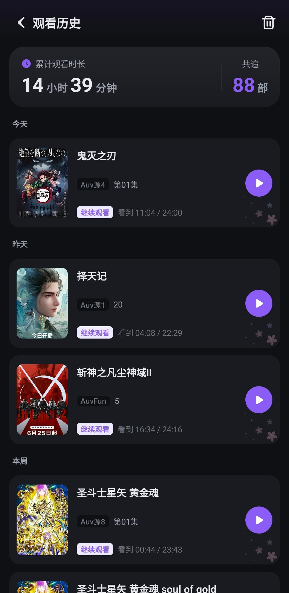

哈哩哈哩藏得真深——10 个冷门技巧让你追番效率翻倍
哈哩哈哩大家都用来看番，但你知道搜导演名能批量找作品、追番列表能按更新状态筛选、推送没收到可能是电池优化拦了吗？这 10 个隐藏设置翻出来。
你以为哈哩哈哩官网就是打开看番、点个追番等更新？其实它藏着一堆能让你追番体验质变的冷门开关——官方不写、教程不提，但我翻了快一个月才摸透的那些边角料功能，今天一次性扒出来。
搜番的正确姿势：别只打片名
大多数人搜番就是打中文译名，搜不到就放弃。但哈哩哈哩的搜索远不止如此。
空格分隔多个关键词这个技巧，我赌 90% 的人不知道。搜"巨人 第一季"比单纯搜"进击的巨人"精准得多——引擎会优先找同时包含这两个词的结果，直接把漫画、剧场版、衍生作品过滤掉。同理，"鬼灭 无限列车"能秒出对应的那一部，而不是整系列堆在面前让你翻。
搜导演或原作名更狠。打"新海诚"，他在哈哩哈哩上的所有作品全出来了——不管是《你的名字》《天气之子》还是更早的《秒速五厘米》，一部不漏。原作名同样好使，搜"堀田由美"能找到她参与的棋魂相关动画。这个用法特别适合那种"我记得是谁做的但片名记不清了"的场景。
还有个小细节：去掉后缀再搜。如果"进击的巨人 最终季"没结果（可能版权或标注问题），先搜"进击的巨人"，从结果页里手动筛，反而更快。

追番推送收不到？不是它忘了，是你的手机拦了
很多人跟我说"哈哩哈哩追番更新不提醒"。我排查了三个朋友的手机，没一个是软件本身的问题——全是系统级拦截。
安装包建议从官方下载拿，避免第三方渠道的版本差异和权限混乱。首先查通知权限：手机设置里找到哈哩哈哩，通知总开关有没有开？很多人装 APP 时点了"不允许"，之后就忘了这茬。其次是电池优化白名单——安卓的省电模式会把后台 APP 的推送掐掉，把哈哩哈哩加进白名单，它才敢在后台活著。最后看 APP 内自己的推送开关：设置里找"推送通知"，追番更新提醒那栏是不是被关了。
三个地方挨个查，基本能解决 90% 的推送问题。剩下那 10%，可能是新番本来就还没更新——哈哩哈哩追番列表里每部番都标了预计更新日，别急。
追番 vs 收藏：为什么我两部都用
哈哩哈哩有两个极易混淆的功能：追番（订阅）和收藏。按钮长得像，很多人随便点一个就不管了，但它们的设计初衷完全不同。
还在连载的番用追番——更新时自动推送提醒，追番列表里有数字角标告诉你"有 X 部番更了"。已经完结的老番用收藏——它不会主动提醒你更新（也没的更了），但能帮你标记"这部好看我想再刷一遍"或者"推荐给朋友"。
两者还有个隐性区别：跨设备同步。不管追番还是收藏，登录同一个账号换手机就自动同步过去，但收藏里的番是"我已经看过/想看"的标记，追番里的是"正在等更新"的队列。把完结的番从追番移到收藏，追番列表瞬间清爽，只留真正在追的那几部。
分类页的宝藏挖掘法：别只看热门推荐
首页推荐永远是那几部头部番，但分类页才是淘片的金矿。我用了半年才发现的组合拳：
按"评分最高"排序，再叠加"时间 ≥ 经典老番"的筛选条件——能挖出一堆豆瓣 9 分以上但首页永远推不到的冷门神作。比如《虫师》《怪化猫》这种，热门推荐轮不到它们，但评分筛一下直接冒出来。
注意小标签。分类页的标签不止"热血""治愈"这些大分类，往下滑有"女性向""日常系""悬疑向"这种细分。大分类里可能漏了，但小题签下反而更完整。我就是在"悬疑向"标签下找到了《只有我不存在的城市》，首页从来没给我推过。
注册时跳过的个性化引导，还能改吗
第一次打开哈哩哈哩会弹一个"你喜欢什么类型"的引导，很多人嫌麻烦直接跳过。跳过之后推荐就一直不准——首页给你推一堆完全不感兴趣的题材。
好消息是，这个引导随时能重新跑。进个人中心找偏好设置，里面有个"重新选择兴趣标签"的选项。重新勾选之后，首页的推荐算法会重置，根据新选的偏好重新学习。我上次帮我妹改了一次，她之前首页全是热血番，改完恋爱向标签后，三天之内就被《辉夜大小姐》攻陷了。
语音搜索和扫码搜，藏在搜索框旁边
首页搜索框旁边有个小图标，很多人以为是个装饰——那是语音搜索按钮。长按说话，直接把要说的番剧名转化成搜索关键词。
还有个扫码搜的入口在搜索框右上角（不同版本位置可能不一样）。功能是扫番剧海报上的二维码快速跳转详情页——这个比较小众，适合你手里有纸质周边海报时用。
历史记录的妙用：自动帮你续播
观看历史这个功能大家都知道能看"我看过什么"，但很少有人注意它和追番的配合。追番列表管"不漏更新"，历史记录管"找到没看完的那集"——两个一起用，追番体验才完整。
还有个隐藏点：历史记录是云端同步的。手机上看到一半切去平板，打开哈哩哈哩，自动跳到上次看到的那一集。没登录的话就只在本机存，换设备就没了——这也是为什么我一直建议注册账号，光这一个同步功能就值回票价。
会员的追番优势，不止免广告
说到会员，很多人第一反应是免广告、高清画质。但哈哩哈哩会员在追番这块还有两个隐性优势：
新番优先观看——比免费用户更早看到更新，在弹幕区抢沙发的快感你懂的。无广告追番这个点真的致命，中间插的贴片广告虽然不长，但看一集被打断两次，追番的节奏全毁了。
不过会员的优势主要体现在"追的过程更顺畅"，追番本身这个功能免费用户也能用，没有任何功能限制。如果只是偶尔追几部番，免费版足够；如果是追番量很大的重度用户，会员的体验提升是实打实的。会员权益的完整说明去halihali文档查，写得比官网详细多了。
搜不到番？试试日文原名或英文译名
有时候中文名就是搜不到——可能是版权问题导致标注不全，也可能是翻译版本太多记混了。这时候别死磕，试试日文原名或英文译名。
我之前搜《命运石之门》死活搜不到（那会还没正式上），后来灵光一闪搜了"Steins;Gate"，直接出了。还有《咒术回战》，搜"呪術廻戦"结果更全。冷门番尤其如此——平台可能只有日原名的标注，没加中文译名的索引。
退一步，只搜核心关键词也管用。"进击的巨人 最终季"没结果？先搜"进击的巨人"，从结果里挑。别让完美主义挡路，能找到就行。
被系统节能模式坑了的推送
最后再补一个最坑的设置：安卓的后台电池优化。
很多人不知道，安卓系统有个机制——长时间后台运行的 APP 会被系统自动掐掉，省点。哈哩哈哩追番推送不及时，很大概率是被这个机制坑了。解决方法：手机设置 → 电池 → 应用管理 → 找到哈哩哈哩 → 选择"不限制"或"无限制"。
我给身边三个朋友调了这个设置之后，其中两个的推送问题直接消失了。这个坑藏得真深，不在哈哩哈哩的设置里，在手机的系统设置里。
以上就是我翻了一个月哈哩哈哩挖出来的 10 个冷门技巧。这些设置项的完整出处我顺手整理到了GitHub、Gitee、GitCode 三个仓库，国内访问有问题的随便换一个，搜不到的时候去翻一下说不定还有惊喜。